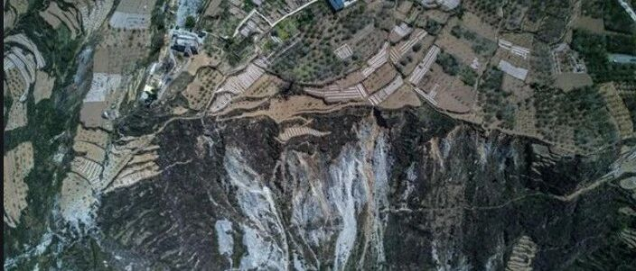
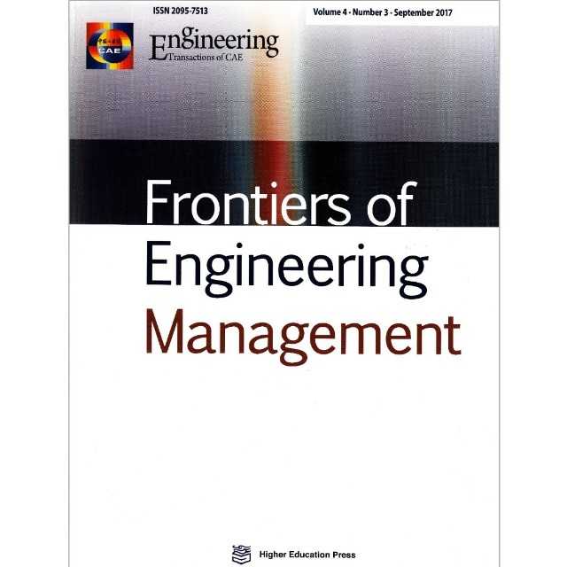

主余震作用下区域建筑震害预测方法
编者荐语：
新近见刊论文的中文版，便于国内读者参考。
以下文章来源于工程管理前沿 ，作者陆新征、程庆乐等

Frontiers of Engineering Management （FEM）is a research journal published in English in both print and online versions.
作者：陆新征，程庆乐，许镇，熊琛
单位：清华大学，北京科技大学，深圳大学
引用：
Xinzheng LU, Qingle CHENG, Zhen XU, Chen XIONG. Regional seismic-damage prediction of buildings under mainshock–aftershock sequence[J]. Frontiers of Engineering Management, 2021, 8(1): 122-134.
文章链接：
http://journal.hep.com.cn/fem/article/2021/2095-7513/26378
https://link.springer.com/article/10.1007/s42524-019-0072-x

导语：地震后余震多发，而强余震会加剧结构的破坏，地震后快速地预测余震对区域建筑的震害对震后应急救援决策有着重要意义。本文提出了一套主余震作用下区域建筑震害预测方法，该方法：采用基于非线性多自由度模型和时程分析方法的城市抗震弹塑性分析方法作为建筑分析方法；通过与建筑在实测主余震下的响应及文献中模型计算结果进行对比，验证了所采用的区域建筑分析模型的合理性；提出了考虑余震幅值、频谱、持时、震级和场地信息多个目标参数相近的主余震序列构造方法。最后以龙头山镇鲁甸地震为例，说明了本文方法的具体实现过程。主要结论有：(1) 采用的基于非线性时程分析和多自由度层模型的城市抗震弹塑性分析方法能够很好地预测主余震作用下区域建筑的响应；(2) 考虑余震幅值、频谱、持时、震级和场地信息多个目标参数相近的主余震序列构造方法能快速合理地构造目标主余震序列；(3) 所提出的主余震作用下区域建筑震害预测方法能够快速构建多种主余震情境并给出相应的震害预测结果，为震后的应急救援决策提供了参考。
1 引言
1.1 研究背景
地震后往往伴随着大量的余震，如1976年唐山地震、2008年汶川地震、2015年尼泊尔Gorkha地震、2016 意大利中部地震等(Varum et al., 2017; Wan et al., 2017; Zheng et al., 2010; Valensise et al., 2017)。结构在主震下遭受破坏来不及修复，而余震的发生往往会加剧在主震下已经损伤建筑的进一步破坏，如2011年基督城地震(Potter et al., 2015)，2015年尼泊尔地震(Chen et al., 2017)，2016年意大利中部地震(Rinaldin and Amadio, 2018)，因此需要考虑余震对建筑的影响。
目前考虑余震影响的单体建筑的分析已经有很多研究成果，如主余震对钢筋混凝土框架(Hatzivassiliou and Hatzigeorgiou, 2015; Hosseinpour and Abdelnaby, 2017)、木结构(Goda and Salami, 2014)、钢框架(Ruiz-García and Negrete-Manriquez, 2011)、钢筋混凝土剪力墙结构(Jamnani et al., 2018)等的影响。预测余震对区域建筑的影响对震后应急救援决策有着重要意义，但是目前没有很好地方法预测主余震作用下区域建筑的震害。因此，需要提出一套预测区域建筑主余震震害的方法。
1.2 研究挑战
实现主余震作用下区域建筑震害预测方法需要解决如下三个问题：
(1) 适用于区域建筑主余震分析的模型
广泛使用的区域建筑震害分析方法主要有：基于历史震害数据的易损性分析方法(ATC-13, 1985)、能力需求分析方法(FEMA, 2012)、时程分析方法(time-history analysis, THA)( Hori, 2006; Lu and Guan 2017)。基于历史震害数据的易损性分析方法虽可以考虑主震对区域建筑的影响，但余震作用下的建筑震害数据很难获取，限制了该方法在考虑余震对区域建筑的影响中的运用。能力需求分析方法基于等效单自由度静力分析方法，虽然能在推覆分析中考虑损伤的累积(Polese et al., 2013)，但是难以准确考虑结构高阶振型影响，以及地震动的某些时域特征（如近断层地震的速度脉冲等）(Lu et al, 2014)。
因此，Lu and Guan (2017) 提出的基于非线性多自由度模型 (multiple-degree-of-freedom, MDOF) 和时程分析方法的区域震害预测方法，能很好地考虑建筑和地震动的特性，建模较方便且计算效率高，同时该方法基于非线性时程分析，能够输入主余震序列，为考虑主余震对区域建筑的影响提供了可能性，但现阶段尚无该方法在区域建筑的主余震分析中的应用，因此本文采用该模型作为区域建筑的分析模型。
(2) 所采用的分析模型的准确性需要被验证
合理准确地计算建筑在主余震下的响应是预测建筑主余震震害的关键，所采用的基于非线性MDOF模型和时程分析方法的区域震害预测方法已经和试验、数值模拟结果和实测震害进行过对比验证(Xiong et al., 2017, 2016; Xu et al., 2014; Cheng et al., 2018)，并且从逻辑上可以用于主余震分析，但是否能准确计算建筑在主余震下的响应有待进一步验证。
工程强震动数据中心(Center for Engineering Strong Motion Data, CESMD) (Haddadi et al., 2012)提供了大量建筑在地震下的实测响应，包括建筑在多次地震下的响应，且提供了标定非线性MDOF模型所需要的建筑参数，为MDOF模型的验证提供了实测主余震响应的数据支持。同时，已经公开发表的论文(Ruiz-García et al., 2018; Ruiz-García and Negrete-Manriquez, 2011; Hatzivassiliou and Hatzigeorgiou, 2015)中有很多单体建筑在主余震作用下的响应分析结果，也为验证工作提供了重要的参考资料。
(3) 快速构造主余震序列的方法
由于Lu and Guan (2017)提出的基于非线性多自由度模型和时程分析方法的区域震害预测方法需要输入主余震时程数据，因此合理地构造出主余震序列是预测主余震作用下区域建筑的震害的关键。目前构造主余震序列的方法主要分为几种：
(a) 采用实际主余震地震动记录(Hatzivassiliou and Hatzigeorgiou, 2015; Ruiz-García and Negrete-Manriquez, 2011; Zhai et al., 2016, 2014)，但是由于不同地震主余震机制差异很大，且实际的主余震记录有限，因此该方法不适用于不同地区的区域主余震震害预测。
(b) 人工构造主余震序列。最简单的方法是构造余震峰值加速度(Peak Ground Acceleration, PGA)与目标余震PGA一致，包括重复主震(Amadio et al., 2003; Fragiacomo et al., 2004)或者随机选取一系列地震动记录(Hatzigeorgiou and Beskos, 2009)，调幅至目标余震幅值。但是重复主震不能考虑余震在频谱上和主震的差异(Ruiz-García, 2012; Shokrabadi Mehrdad et al., 2018)。为此，考虑多个构造余震的参数与目标余震参数一致的方法被提出了，如加速度目标谱(Li and Ellingwood, 2007)、震级和PGA(Goda and Taylor, 2012)、震级距离和场地类别(Goda, 2012)、场地和余震特征(Hu et al., 2018)。但是这些方法仍有改善空间，以便考虑更多因素的影响。
对此，本文基于Kim and Shin(2017)提出主余震频谱关系、Bommer et al(2009)提出的重要持时公式和NGA-West2(Ancheta et al., 2014)数据库，提出了考虑余震幅值、频谱、持时、震级和场地信息多个参数相近的主余震序列构造主方法。
1.3 研究思路
本文根据所提出的主余震序列构造方法，结合基于非线性多自由度模型和时程分析方法的区域震害预测方法，提出了一套主余震作用下区域建筑震害预测方法。该方法构造多种主余震情境，根据实测主震记录、主余震频谱关系和震级持时关系，构造符合余震幅值、频谱、持时、震级和场地信息多目标参数相近的主余震序列；采用基于非线性多自由度模型和时程分析方法的区域震害预测方法建立区域建筑分析模型；输入主余震序列到区域建筑的MDOF分析模型中，即可快速预测不同余震情境下考虑主余震影响的区域建筑的震害。最后以龙头山镇的主余震震害预测为例，说明本文建议方法的具体实现流程。
2 主余震作用下区域建筑震害预测方法
2.1 分析框架
本文提出了一套主余震作用下区域建筑震害预测方法，该方法的框架如图1所示。该方法主要包括以下步骤：
(1) 通过地震台网快速获取主震实测地面运动记录及震级、位置、断层等宏观信息；
(2) 由于余震发生的时间、位置和震级等的不确定性，本文假定多种余震震级、位置、断层信息，构造多种余震情境；
(3) 根据构建的余震情境，依据主余震关系，确定余震幅值和频谱特征，再根据震级持时关系确定余震持时特征；
(4) 选取与余震幅值、频谱、持时、震级和场地信息相近的地震动作为余震记录，构造主余震序列；
(5) 输入主余震序列到建筑的MDOF模型中，进行非线性时程分析即可预测主余震作用下区域建筑的震害。

图1. 主余震作用下区域建筑震害预测方法框架
2.2 区域建筑震害分析模型
本文采用Lu and Guan (2017)提出的基于非线性多自由度模型和时程分析方法的区域震害预测方法来模拟区域建筑地震下的响应。区域建筑可以划分成常规多层建筑、常规高层建筑(Xiong et al. 2016; Xiong et al. 2017)。区域中的常规多层建筑通常表现出剪切变形模式，因此多自由度剪切层模型来模拟，该模型假设结构每一层的质量都集中在楼面上，不同楼层之间的质点通过剪切弹簧连接在一起，如图2a所示；而高层建筑通常表现出弯剪耦合变形形态，因此采用多自由度弯剪耦合模型模拟高层建筑，该模型每一层分别用一根弯曲弹簧和剪切弹簧来模拟，如图2b所示。上述两种多自由度模型楼层之间弹簧的骨架线均采用HAZUS报告中推荐的三线性骨架线，如图2c所示。滞回模型采用图2d所示的单参数滞回模型。该方法建议了中国(Xiong et al., 2017, 2016)和美国(Lu et al., 2014)不同国家基于宏观数据的多自由度模型层间参数确定方法。对于标定好层间参数的建筑分析模型，输入地震动时程进行非线性时程分析，即可以得到区域中每栋建筑任一时刻任一楼层的速度、加速度和位移，并且该模型针对完好、轻微破坏、中等破坏、严重破坏、倒塌五种不同破坏状态提出了相应的破坏状态判别准则。

图2. (a) MDOF剪切层模型; (b) MDOF弯剪耦合模型;
(c) MDOF模型中的三线性骨架线; (d) 单参数滞回模型
2.3 区域建筑分析模型主余震验证
合理准确地计算建筑在主余震下的响应是预测建筑在主余震下震害的关键，本节通过与建筑在主余震作用下的实测响应和已经公开发表文献中的模型计算结果对比，验证本文所采用的区域建筑分析模型的准确性。
2.3.1 与建筑实测响应对比
从CESMD数据库(Haddadi et al., 2012)中选取建筑在实际主余震作用下的实测响应记录，与所采用的区域建筑分析模型的计算结果进行对比。图3给出了10组的对比结果，其中建筑及主余震详细信息如表1所示，表中建筑结构类型采用HAZUS中建筑分类方式进行分类，分析输入的地震动均为建筑底部实测的地震动记录。典型的建筑顶点位移时程的对比如图4所示，对应表1中编号为3的建筑。从对比结果可以看出，本文所采用的区域建筑分析模型计算的主余震响应与建筑实测主余震响应较为一致。

图3. 建筑主余震实测记录与MDOF计算结果对比

图4. 编号3的建筑顶点位移时程对比
表1. 建筑及主余震基本信息

2.3.2 与已发表文献中的结果对比
为了进一步验证本文所采用的MDOF模型可以对主余震下结构的行为进行较好的模拟，本文将MDOF模型在主余震下的响应与已经公开发表的论文中结构的主余震响应进行了对比，建筑基本信息及输入的主余震和所出自论文信息如表2所示，所选对比论文中具体的建筑主余震分析方法和结果可参考对应的文献。相应的对比结果如图5所示，其中，横坐标为MDOF模型计算出的建筑各层的层间位移角，纵坐标为对比论文所给的层间位移角，典型的层间位移角的对比结果如图6所示，分别对应表2中编号为1、2和7号的案例。图7给出了表2中编号9和10所示的一栋3层RC框架在主余震作用和主震单独作用下的对比结果。从对比结果可以看出，本文所采用的MDOF模型的计算结果与公开发表论文中的结构在主余震下响应的分析结果较为一致。
表2. 与已发表文献对比所选的建筑及主余震基本信息


图5. MDOF模型主余震作用计算结果与已发表论文中结果对比

图6. 典型案例层间位移角的对比结果

图7. RC框架在主余震作用和主震单独作用下的对比结果
2.4 主余震序列构造方法
合理地构造主余震序列能为预测区域建筑在主余震作用下的震害结果提供地震动输入，本小节详细介绍本文所提出的构造符合余震幅值、频谱、持时、震级和场地信息多目标参数相近的主余震序列构造方法。
2.4.1 确定余震地震动幅值与频谱
根据NGA-West2地震动数据库中实际主余震记录，Kim and Shin(2017)提出了确定余震水平向地震动参数的方法，本文采用该方法，根据主震记录和主余震基本信息确定余震的幅值和频谱特性，如式(1)- (4)所示：

式中，YMS和YAS分别为主余震的强度指标，该指标可以是峰值加速度、峰值速度(Peak ground velocity, PGV)和5%阻尼比的拟加速度反应谱(5% damped pseudo spectral acceleration, PSA)；fmag、fdist和fsite分别是主余震关系关于震级、距离和场地因素的成分；MMS、MAS分别为主震和余震的矩震级；RrupMS和RrupAS分别是主震和余震的断层距；VS30为地表以下30 m范围内的土层平均剪切波速；c0-c6为回归系数，详细的主余震关系模型的介绍可以参考文献(2017)。运用该方法得到的地震动PSA与两组实测主余震记录进行对比（两组实测记录为Goda and Taylor (2012)表1中Station ID为288和318的两组实测主余震记录），如图8所示。

图8. 实测余震PSAs与本文主余震关系计算的PSAs对比
2.4.2 确定余震持时
持时是地震动的三要素之一，在结构分析中有着重要影响，现有规范也要求所选择的地震动持时能符合场地特性(ASCE SEI 4-16, 2017)，因此，需要在选择地震动时考虑持时的影响。关于地震动持时的定义有很多(Bommer and Martínez-Pereira, 1999)，本文选择应用较多的重要持时作为本方法中地震动持时的定义(Du and Wang, 2017)，选用Bommer et al. (2009)提出的根据震级、断层、场地信息确定持时的方法来确定余震的重要持时。该方法基于NGA-West地震动数据库，回归得到了重要持时的公式，如式(5)所示：

其中DS是重要持时(本文选用5%-95% IA之间的时间间隔作为持时的指标，即DS5-95，IA为Arias强度)，Ztor为地面到断层顶部的深度，c0、m1、r1、r2、h1、v1和z1为回归系数，详细的根据震级确定重要持时的方法参见Bommer et al (2009)。
2.4.3 选波构造主余震序列
在余震的幅值、频谱特性和持时确定后，便可以在NGA-West2 (Ancheta et al., 2014)在线数据库中运用其选波工具选取与余震的幅值、频谱、持时以及余震的震级和场地信息多目标相近的地震动作为余震地震动记录 (PEER, 2018)。本文提出的构造主余震序列的方法能够构造区域范围的主余震序列场，为预测主余震下区域建筑的响应提供了主余震输入。每次分析时可以选取多组余震地震动记录，一方面多组地震动输入可以减小地震动输入带来的不确定性，另一方面也可以充分利用本文所采用的MDOF分析模型的计算效率。
2.4.4 实际主余震情境验证
本小节将以一次实际主余震情境为例，验证本文建议的构造主余震记录的方法。选取表1中2011年的伯克利M4.0-M3.8主余震序列(CESMD, 2018a, b)作为验证案例。
(1) 首先，获取主震和余震的基本信息如表3所示，在“Oakland-11-story Residential Bldg” (ORB)记录到两次地震的地面运动记录和结构响应的时程，其中，实测主余震记录如图9所示；
(2) 输入余震的基本信息到式(5)可以估计余震的重要持时DS5-95为3.08 s，而该点实测余震的重要持时DS5-95为2.66 s，误差为15.8%；
(3) 输入主余震的基本信息到式(1)- (4)，即可估计ORB台站处余震的PSA，将其与实测余震PSA对比如图10所示。
(4) 根据以上余震信息，在PEER地震动数据库中选取与余震幅值、频谱、持时、震级和场地信息相近的地震动构造主余震序列，本次分析选取了15组地震动记录，选波结果如图11所示，说明本文提出的主余震序列构造方法能较为合理地构造目标主余震序列。
(5) 将主震与余震地震动记录连接在一起，中间加入足够长的加速度为0的间隔（大于20 s）保证结构在主震作用完后静止，即构造好主余震序列。将实测主余震记录输入MDOF计算模型中，计算出的建筑余震下的最大顶点位移与选波构造的15组地震动计算结果的平均值的误差为11.54%。需要指出的是，15组地震动计算出的建筑余震下的最大顶点位移的变异系数为0.34。
表3. 2011 Berkeley主余震基本信息


图9. ORB建筑实测主余震记录

图10. ORB台站实测余震PSA与计算PSA对比

图11. 选波结果
3 案例分析——以龙头山镇鲁甸地震为例
本节将以龙头山镇鲁甸地震为例，说明本文所建议的主余震作用下区域建筑震害预测方法的具体实现流程。龙头山镇的震害调查收集了钢筋混凝土框架结构、设防砌体结构和未设防砌体结构共计56栋建筑的结构及震害资料。根据收集的建筑的基本信息（建筑层数、层高、结构类型、建造年代和建筑面积），采用MDOF模型的参数标定方法建立该区域建筑群分析模型(Xiong et al., 2017)。Xiong et al. (2017) 将MDOF模型的分析结果与实际震害进行了对比，说明了该分析模型能够较为准确可靠的预测区域建筑的地震损伤情况。在此基础上，本文给出了不同主余震情境下龙头山镇的震害预测结果，具体的实现流程如下：
(1) 本次鲁甸地震的基本信息如表4中主震信息所示，在龙头山镇台站记录到鲁甸地震的地面运动记录如图12所示。
(2) 由于余震发生的时间、位置和震级等的不确定性，这里示例性地假定了四种余震情境，余震基本信息如表4所示；
(3) 输入余震的基本信息到式(5)可以估计余震的重要持时DS5-95如表4所示；
(4) 输入主震记录和主余震的基本信息到式(1) - (4)，即可估计龙头山镇台站处余震的PSA，不同主余震情境下的余震PSA如图13所示；
(5) 根据以上余震信息，在PEER地震动数据库中选取与余震幅值、频谱、持时、震级和场地信息相近的地震动作为余震记录，每种主余震情境选取了20组地震动记录；
(6) 将主震与余震地震动记录连接在一起，中间加入足够的间隔（大于20 s）保证结构在主震作用完后静止，即构造好主余震序列。将构造好的主余震记录输入到龙头山镇56栋建筑中，取20组地震动分析结果的平均值，主震单独作用和各个主余震情境下的分析结果对比如图14所示。图14中折线为20组地震动计算结果的标准差，从图中可以看出，随着震级的减小，余震造成的影响在减小，结构的破坏主要由主震控制，计算结果的离散程度相应在减小。为了对比其他主余震构造方法计算结果与本方法主余震构造方法，本研究采用了广泛使用的重复主震的方法构造了“主震-主震”工况，在该工况下龙头山镇的震害计算结果如图14所示。可以看到，与主余震一工况相比，重复主震的主余震序列构造方法将会造成更为严重的建筑震害，这与Ruiz-García and Negrete-Manriquez’s (2011)的分析结果一致。
不同结构类型建筑在主震和主余震1作用下的破坏情况如图15所示，可以看到砌体结构破坏将比框架结构更为严重。同时，本研究所提出的方法能给出不同建筑在不同主余震情境下的结构响应，如表5所示，给出了龙头山镇建筑编号为Building_1和Building_2两栋建筑在不同主余震情境下的最大层间位移角及破坏状态，精细化的震害分析结果为区域建筑主余震震害预测提供了丰富的参考信息。
本文提出的方法能够给出建筑在不同主余震情境下的震害结果，分析结果可以为震后应急救援提供参考。例如，从表4的分析，初步可以说明，在发生5.0级以下余震时，该地区建筑震害不会有大的变化，可以按照既定救灾方案进行救灾，在发生5.5级以上余震时，该地区建筑震害会有所加剧，应当根据灾情加剧程度增加救援力量和物资。需要注意的是，该结论是基于案例分析中四个工况得到的，如果需要得到更为精细的结论，则需要假设更多的余震情境而展开分析。
表4. 案例主震信息及构造的余震基本信息


图12. 龙头山台站地震动记录

图13. 不同主余震情境下的余震PSA

图14. 主震及不同主余震情境下龙头山镇震害结果

图15. 不同结构类型建筑在主震和主余震1作用下破坏情况
表5. 典型建筑最大层间位移角及破坏情况

需要说明的是，完成上述一个主余震案例的分析仅需要70 s (with Intel Xeon E5 2630 @2.40 GHz and 64 GB RAM)，说明本文提出的主余震作用下区域建筑震害预测方法有着很高的分析效率，这使该方法在地震应急中能得以较好地应用。主震发生后，可以快速构建多种主余震情境并给出相应的震害预测结果，为震后的应急救援决策提供了重要参考信息。
4 结论
本文提出了一套主余震作用下区域建筑震害预测方法，该方法采用城市抗震弹塑性分析方法作为建筑分析方法；通过与建筑在实测主余震下的响应及已经发表的文献中模型的计算结果进行对比，验证了所采用的建筑分析模型的合理性；提出了考虑余震幅值、频谱、持时、震级和场地信息多个目标参数相近的主余震序列构造主方法。主要结论有：
（1） 所采用的城市抗震弹塑性分析方法能够很好地预测主余震作用下区域建筑的响应；
（2） 考虑余震幅值、频谱、持时、震级和场地信息多个目标参数相近的主余震序列构造方法能快速合理地构造目标主余震序列；
（3） 所提出的主余震作用下区域建筑震害预测方法能够快速构建多种主余震情境并给出相应的震害预测结果，为震后的应急救援决策提供了参考。

--End--
相关研究

新论文：抗震&防连续倒塌：一种新型构造措施
长按识别二维码，关注我们的科研动态